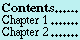

![[Previous]](../img/Prev.gif)
![[Up]](../img/Up.gif)
![[Next]](../img/Next.gif)
The Common Lisp Object System MetaObject Protocol
- Introduction
- Metaobjects
- Classes
- Slot Definitions
- Generic Functions
- Methods
- Specializers
- Method Combinations
- Inheritance Structure of Metaobject Classes
- Implementation and User Specialization
- Restrictions on Implementations
- Restrictions on Portable Programs
- Processing of the User Interface Macros
- Compile-file Processing of the User Interface Macros
- The defclass Macro
- The defmethod Macro
- Processing Method Bodies
- The defgeneric Macro
- Subprotocols
- Metaobject Initialization Protocols
- Initialization of Class Metaobjects
- Reinitialization of Class Metaobjects
- Initialization of Generic Function and Method Metaobjects
- Class Finalization Protocol
- Instance Structure Protocol
- Funcallable Instances
- Generic Function Invocation Protocol
- Dependent Maintenance Protocol
Generic Functions and Methods Dictionary
Generic Function add-dependent
Generic Function add-direct-method
Generic Function add-direct-subclass
Generic Function add-method
Generic Function allocate-instance
Generic Function class-...
Generic Function compute-applicable-methods
Generic Function compute-applicable-methods-using-classes
Generic Function compute-class-precedence-list
Generic Function compute-default-initargs
Generic Function compute-discriminating-function
Generic Function compute-effective-method
Generic Function compute-effective-slot-definition
Generic Function compute-slots
Generic Function direct-slot-definition-class
Generic Function effective-slot-definition-class
Function ensure-class
Generic Function ensure-class-using-class
Function ensure-generic-function
Generic Function ensure-generic-function-using-class
Function eql-specializer-object
Function extract-lambda-list
Function extract-specializer-names
Generic Function finalize-inheritance
Generic Function find-method-combination
Function funcallable-standard-instance-access
Generic Function generic-function-...
Initialization of Class Metaobjects
Initialization of Generic Function Metaobjects
Initialization of Method Metaobjects
Initialization of Slot Definition Metaobjects
Function intern-eql-specializer
Generic Function make-instance
Generic Function make-method-lambda
Generic Function map-dependents
Generic Function method-...
Readers for Class Metaobjects
Readers for Generic Function Metaobjects
Readers for Method Metaobjects
Readers for Slot Definition Metaobjects
Generic Function reader-method-class
Generic Function remove-dependent
Generic Function remove-direct-method
Generic Function remove-direct-subclass
Generic Function remove-method
Function set-funcallable-instance-function
Function (setf class-name)
Function (setf generic-function-name)
Generic Function (setf slot-value-using-class)
Generic Function slot-boundp-using-class
Generic Function slot-definition-...
Generic Function slot-makunbound-using-class
Generic Function slot-value-using-class
Generic Function specializer-direct-generic-functions
Generic Function specializer-direct-methods
Function standard-instance-access
Generic Function update-dependent
Generic Function validate-superclass
Generic Function writer-method-class